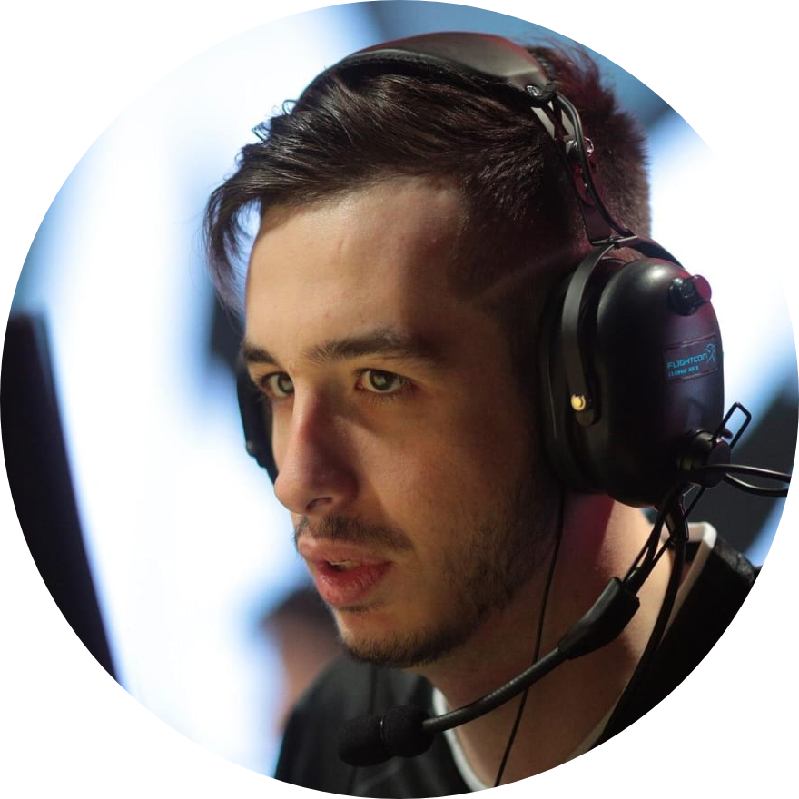

|  |
Kenny Schrubs
French
|
| Mouse | EDPI | DPI | Polling | Sensitivity | Zoom |
|---|---|---|---|---|---|
| Logitech GMX518 | 880 | 400 | 500 HZ | 2.2 | 1 |
Mouse |
Mousepad |
Monitor |
Refresh Rate |
In-game resolution |
Scaling |
Keyboard |
Headset |
| Logitech G MX518 | flicks.gg kennyS Limited Edition | AOC AG251FZ | 240 HZ | 1152×864 | Stretched | Logitech G512 | Logitech G PRO X |